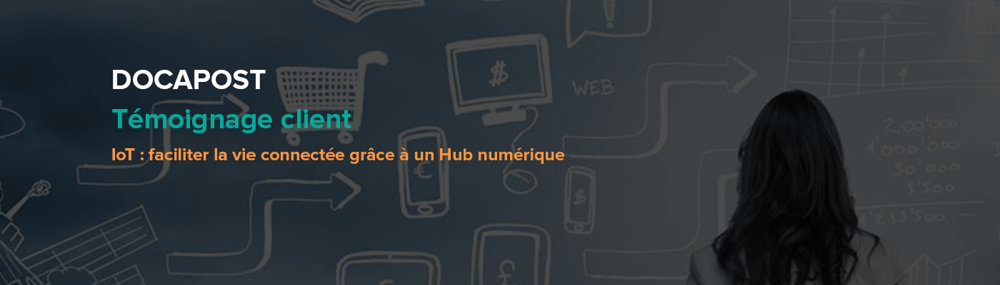
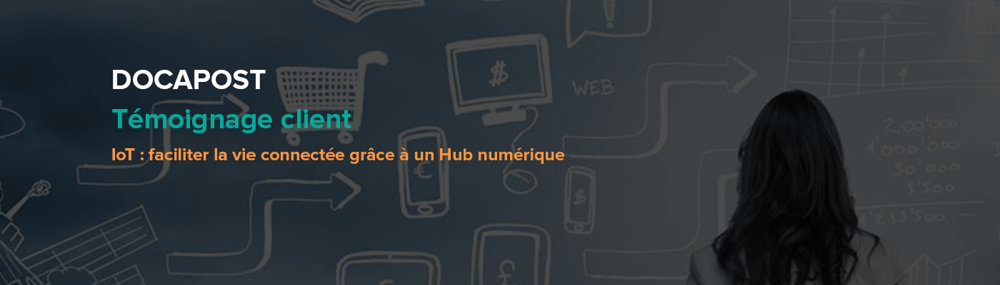

Keynote d'ouverture AXA : Transformation digitale, les enjeux d’un grand groupe
#Keynote #Transformation
Témoignage Ingenico : Nouveaux moyens de paiement : moderniser son SI
#SI #Paiement
Amener une équipe vers le Continuous Delivery
#Agile #Craft #DevOps
L’IT cherche depuis plusieurs dizaine d’années le graal : l’industrialisation de ces process. Intéresserons-nous à l’approche «Continous Delivery».
C. Rochas
Voir plus
Be Data Driven : Monter son Data Lab
#Data
Comment réellement tirer parti de toutes vos données et en tirer un véritable avantage concurrentiel ? En montant un Data Lab.
J. Buret
Voir plus
Apache Mesos, ou comment exploiter les ressources de votre Data Center
#Back
Venez découvrir comment Mesos, Marathon et Docker vous permettes d’exploiter au mieux les ressources de votre Datacenter.
J-P. Thiery
Voir plus
Témoignage Louis Vuitton : Digitalisation, de l’utilisation du mobile dans le retail
#Mobilité
Swift dans la vraie vie
#Mobilité
Assistez à un retour d’expérience concernant le dernier langage d’Apple dans deux projets mobiles utilisés en production.
S. Civetta et F. Mirault
Voir plus
Les algorithmes du Machine Learning
#Data
Découvrez ce qui se cache derrière ces mots, quels algorithmes existent, comment ils fonctionnent et comment les utiliser.
Y. Benoit, A. Phelip et T. Ounnas
Voir plus
Dessine moi un nuage
#Cloud
Quels avantages tirer du Cloud ? Que vous en soyez un client, un bâtisseur u un aspirant, partagez votre vision de ce mouvement qui débute à peine.
A. Maury et S. Le Mesle
Voir plus
Témoignage Société Générale : DevOps à grande échelle, bénéfices et difficultés
#DevOps
Témoignage Docapost : IoT, une réalité
#Data #IoT
Kafka par la face Nord
#Back
Kafka est devenu en quelques temps un outil central dans les architectures d’analyses de données. Venez comprendre par la pratique !
X. Bucchiotty et M. Blanc
Voir plus
Témoignage Cellenza : Développez et déployez vos applications multiplateformes dans le Cloud
#Mobilité
Témoignage Voyages-SNCF.com : DMP, les apports de la Data Sciences à la connaissance client
#Data
Évaluer votre maturité produit
#Agile
Découvrez les clés pour évaluer votre maturité produit et savoir si votre entreprise a réellement les armes pour faire les bons produit ?
A. Irrmann-Tézé
Voir plus
Témoignage Orange Technocentre : Méthodes agiles, se transformer pour innover
#Agile #Transformation
Le Nouvel Ops
#DevOps
L’Ops d’hier maître absolu des clés dès la production n’est plus ! Plus encore qu’un agiliste ou qu’un craftman, le nouvel Ops est le soutien dont vous avez besoin.
S. Le Mesle
Voir plus
Du JavaScript au métal, le web «natif»
#Front
Asmjs, SIMD, GPGPU, autant de technologies/techniques qui nous font miroiter la promesse de performances natives pour les applications web.
P. Tandia
Voir plus
Témoignage Akamis :
#GrowthMarketing #Digital
Le monde du Digital change et le marketing avec. Les utilisateurs, leurs attentes et leurs usages évoluent et on ne peut plus les intéresser avec les mêmes méthodes.
S. Coussement
Voir plus
À la découverte des mécanismes internes de Cassandra
#Data
Construire une base de données distribuée, scalable et hautement disponible est une opération complexe. Focus sur Cassandra.
M. Nantern
Voir plus
CQRS + Eventsourcing : en direct !
#Craft
Témoignage XebiaLabs : XL Release
#DevOps
Partez à la recherche du temps (perdu) entre le Use Case Metier et sa Mise en Service.
B. Moussaud
Voir plus
Témoignage UX Républic : L’entreprise centrée utilisateur
#UX
Scaling Culture
#Agile
L’agilité c’est l’auto-organisation, pas les process ! Et si plutôt que Scaling Agile, le mantra était : Scaling Culture ?
N. Lochet
Voir plus
Double Loop TDD
#Craft
À partir d’une application existante, développez de nouvelles fonctionnalités en mode test-first. On y parlera BDD et TDD.
D. Lemos et P-J. Vardanega
Voir plus
Brace yourselves, Angular 2 is coming!
#Agile
Petit tour d’horizon de cette jeune -et non moins prometteuse- mouture du framework JS Angular 2 !
A. Hebert, D. Podyachiy et D. Lukic
Voir plus
Les challenges des Microservices
#Back
L’approche microservice devient de plus en plus présente dans nos conceptions d’architectures.
N. Jozwiak
Voir plus
Cet événement est organisé par